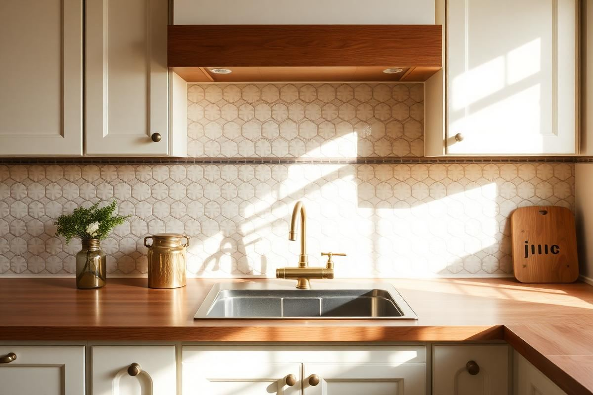
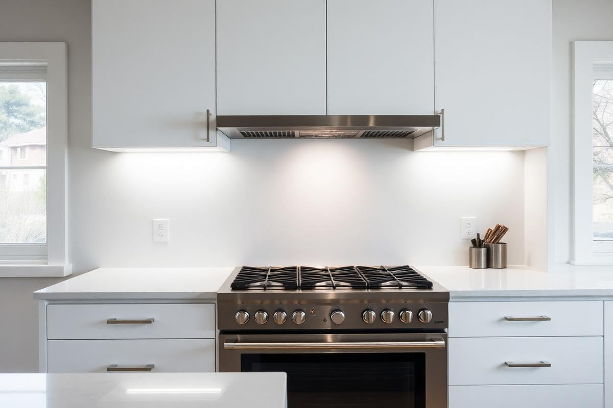
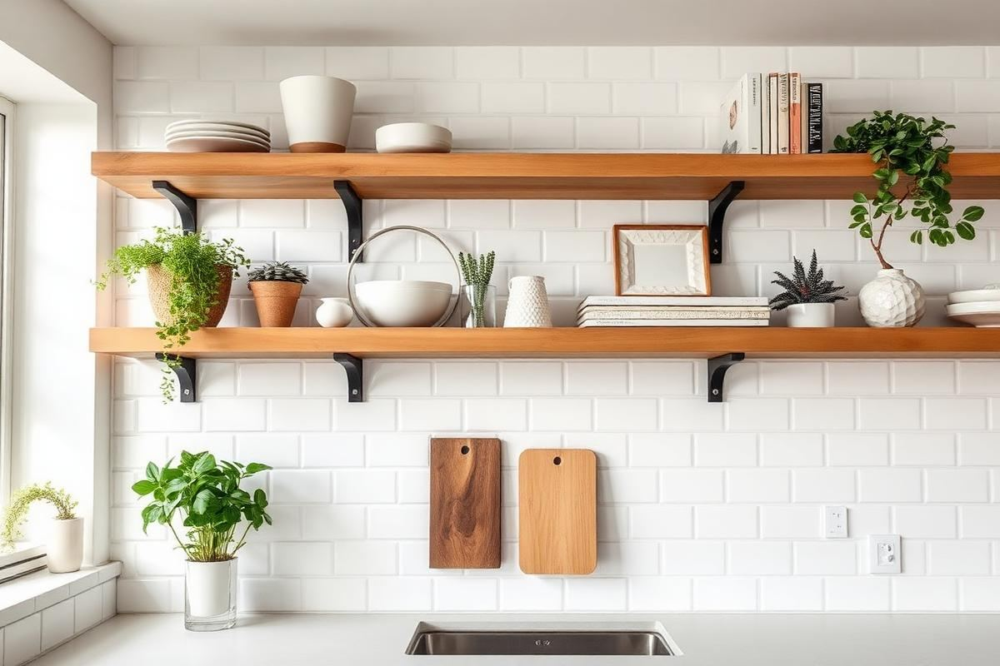
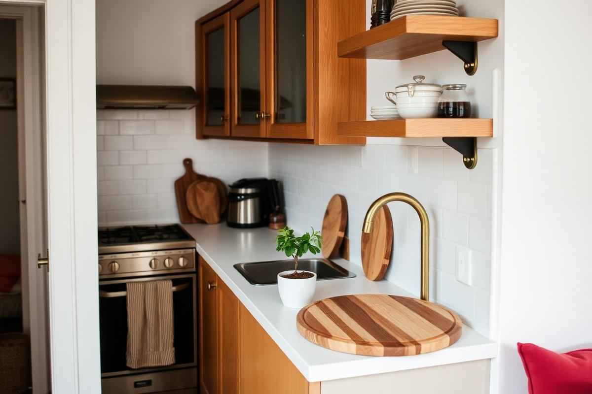
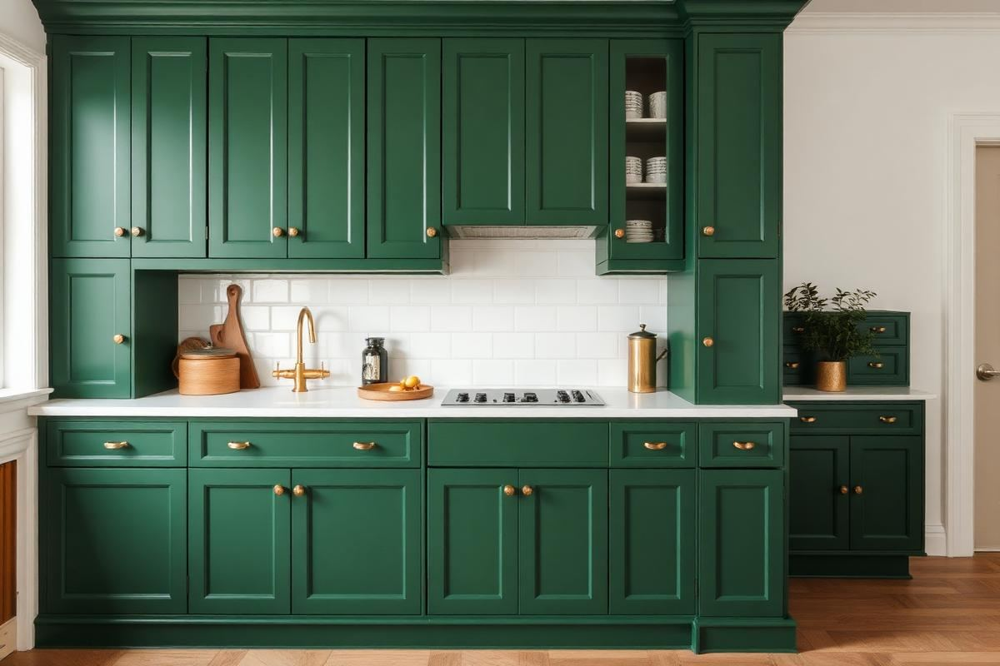

Kitchen Backsplash Ideas That Still Feel Fresh

Kitchen Backsplash Ideas That Still Feel Fresh is one of those topics where a little planning goes a long way. In this guide I walk through the process we use in real homes — not just what looks good in a photo, but what actually holds up over time.
Start here
Before you buy or move anything, measure the space and note how you actually use it. The best-looking room is one that matches how you live, so start with the routines: where you sit, where you drop keys, where the light falls in the afternoon.
The essentials
Focus on the pieces that do the most work. Get those right and the rest of the room comes together with much less effort. Aim for materials that patina rather than degrade, and colors you will still like in five years.
- Choose one clear focal point per room.
- Pick materials that improve with age.
- Layer textures instead of adding more colors.
- Leave visual breathing room — negative space is a design element.
Common mistakes
The mistakes we see most often are matching everything too tightly, over-scaling accessories, and skipping proper lighting. Fix those three and most rooms improve overnight.

Material Spotlight: Beyond Ceramic
While ceramic and porcelain tiles remain popular, truly fresh kitchen backsplashes embrace a wider material palette. Consider honed marble for a sophisticated, understated elegance. A 3"x6" subway tile in Carrara marble, for instance, can cost $12-$25 per square foot. For a tactile, organic feel, Zellige tiles from Morocco offer hand-chiseled imperfections and a unique glaze. Expect to pay $18-$35 per square foot for authentic Zellige, often installed with a 1/8"-1/4" mortar joint, allowing for natural variations. Another exciting option is large-format porcelain slabs. These can be installed with virtually invisible grout lines, creating a seamless, modern look that mimics natural stone but at a fraction of the cost and maintenance. A 24"x48" porcelain slab might run $8-$15 per square foot but requires specialized installation, often increasing labor costs.
Don't overlook less conventional materials like pressed tin or copper sheets, offering a vintage or industrial vibe. A standard 2'x4' pressed tin panel can range from $20-$80, depending on the pattern. Additionally, consider fluted wood panels, sealed for kitchen durability, for a unique textural element. These can be custom-made or sourced as pre-finished panels, typically costing $15-$40 per linear foot. The key is to select a material that complements your existing cabinetry and countertop but also introduces a fresh, unexpected texture or finish.
Design for Impact: From Pattern to Height
To truly make a backsplash feel fresh, evaluate more than just the material – consider its installation and reach. A common mistake is stopping the backsplash at the upper cabinets. Instead, extend it to the ceiling, especially behind a range hood, to create a dramatic focal point. This creates a more considered, built-in look than a simple strip of tile. For a 30" range with 9-foot ceilings, this could mean an extra 30"x48" (10 sq ft) of tile. Another impactful design choice is to use a large-scale pattern. Think beyond herringbone or subway; consider intricate mosaic patterns like arabesque or even a bespoke geometric design. These often come premounted on mesh sheets for easier installation. A 12"x12" sheet of an intricate mosaic might cost $10-$40 per sheet.
- Opt for a stacked vertical layout with rectangular tiles (e.g., 2"x8" or 3"x12") for a contemporary, upward-reaching aesthetic.
- Integrate a different, complementary tile in a small section (e.g., 6"x12" above the range) to create a subtle zone of interest.
- Consider a full-slab backsplash in quartz or natural stone, eliminating grout lines entirely for a sleek, ultra-modern look. This is a premium option, often costing $50-$100+ per square foot for the material alone, plus significant fabrication and installation costs.
Budgeting for Beauty: A Realistic Breakdown
A fresh kitchen backsplash doesn't necessarily mean breaking the bank, but a realistic budget is crucial. For a typical 10'x12' kitchen with 20-30 square feet of backsplash, here’s a breakdown: <br/><br/>**Material Costs:** <br/>- Entry-level ceramic subway tile (3"x6"): $2-:7 per sq ft <br/>- Mid-range porcelain or glass tile: $8-:20 per sq ft <br/>- Premium natural stone (marble, handmade Zellige): $25-:50+ per sq ft <br/>- Slab materials (quartz, natural stone): $50-:100+ per sq ft (material only).
**Installation Costs:** <br/>- DIY: Tools (:50-:200) + mortar, grout, sealant (:50-:150). <br/>- Professional: Expect $10-:30 per sq ft for standard tile installation. Intricate patterns, small tiles, or slab installation can increase this to :40-:70+ per sq ft. This often includes demolition of old backsplash, surface preparation, and sealing. Always get at least three detailed quotes, specifying exactly what's included. Over-order material by 10-15% for cuts and mistakes. Don't forget the cost of outlet covers if you're switching to higher-end materials or colors.
Lighting the Way: An Underrated Detail
A stunning backsplash can be completely overshadowed by poor lighting. Integrated under-cabinet lighting is paramount, and often overlooked in planning. Opt for LED strip lighting, which offers even illumination without hot spots, and choose a color temperature that complements your backsplash. Warm white (2700K-3000K) can enhance the warmth of natural wood tones or creamy tiles, while cool white (3500K-4000K) can bring out the crispness of white or grey modern tiles. These strips are often adhesive-backed and can be cut to length, costing $20-$80 for a 16-foot roll. Consider dimmable options to control the ambiance.
Beyond functional task lighting, think about accent lighting. Recessed puck lights under open shelving can highlight a particularly beautiful tile, or even a small picture light above a feature section of tile. If your design includes an alcove or niche above the range, integrating a small LED puck light (around $15-$30 each) can add a touch of drama. The goal is to enhance the texture and sheen of your chosen material, making it truly sparkle. Remember to plan for electrical outlets behind cabinets for these lighting solutions, or consult an electrician for hardwiring, which can add $150-$300 to the installation cost for new wiring.
Maintenance Matters: Keeping It Fresh for Years
The secret to a backsplash that feels fresh for years isn't just in the initial design, but in diligent maintenance. Different materials require different care. <br/><br/>**Natural Stone (Marble, Travertine):** Requires sealing upon installation and re-sealing every 6-12 months with a penetrating sealer (:15-:30 per bottle). Avoid acidic cleaners (vinegar, lemon juice) as they can etch the surface. A neutral pH stone cleaner (:10-:20) and a soft cloth are best for daily cleaning.
- **Ceramic/Porcelain:** Generally low maintenance. Use a mild all-purpose cleaner. For stubborn grime, a non-abrasive scrub brush and a diluted grout cleaner (:8-:15) are effective. If grout is unsealed, consider a grout sealer (:15-:25) to prevent staining.
- **Glass Tile:** Wipe with a glass cleaner or diluted vinegar solution to avoid streaks. Be gentle, as some glass tiles can chip if hit hard.
- **Metallic (Copper, Tin):** Wipe with a soft, damp cloth. Copper will naturally patina over time; if a bright shine is desired, use a copper polish (:10-:20). Avoid abrasive cleaners.
- **Zellige Tile:** Its inherent imperfections mean some textural variation is expected. Use a soft cloth and mild, non-acidic cleaner. Due to its porous nature, ensure it's properly sealed after installation.
Regular wiping down after cooking, especially near the stovetop, prevents grease buildup that can be difficult to remove later. Address grout discoloration promptly with a targeted grout cleaner or, for severe cases, consider re-grouting every 5-10 years for a truly fresh refresh.
Key takeaways
- Match the room to how you actually live.
- Anchor with one main piece and clear lighting.
- Layer textures, not colors.
- Leave breathing room around every object.
Frequently asked questions
Where should I start?
Start with the largest piece and the light. Everything else — art, textiles, small objects — is easier to place once those two anchors are set.
What is a realistic budget?
Prioritize the pieces you touch every day. Spend more on those and less on decorative items, which are easy to swap over time.
How long should this last?
A well-chosen main piece should last 10–15 years. Refreshes come through textiles, art, and accessories, not full replacements.

Sophia Bennett is a certified interior stylist and the senior editor at Styleire. She has spent more than eight years helping homeowners and renters create warm, functional interiors, with hands-on experience across small city apartments and family homes. Her work has been informed by close collaboration with independent designers, craftspeople, and product testers.
View full profile →Related reading

Open Kitchen Shelving: When It Works, When It Doesn't
Open shelving looks great in photos. In real kitchens, it is a lifestyle choice, not a style choice.

Small Kitchen Decor Ideas That Add Style Without Clutter
Every square inch of counter matters in a small kitchen. Here is how to add style without losing prep space.

Kitchen Color Schemes That Won't Feel Dated
Kitchen Color Schemes That Won't Feel Dated — a clear, editor-tested guide covering the essentials without the filler.